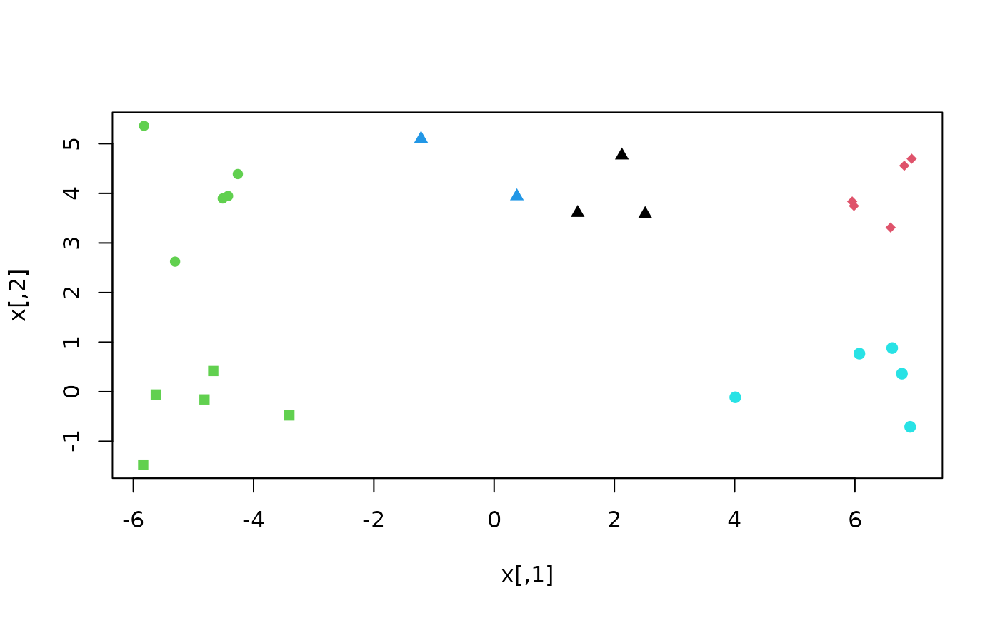
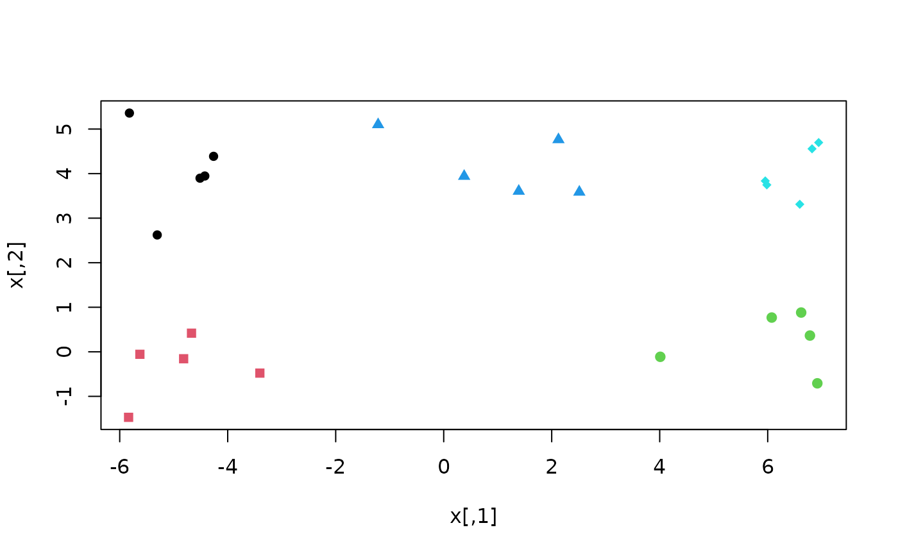

k-means++ clustering (Arthur and Vassilvitskii 2007)
improves the speed and
accuracy of standard kmeans clustering
(Hartigan and Wong 1979)
by preferring initial cluster centres
that are far from others.
A scalable version of the algorithm has been proposed for larger data sets
(Bahmani et al. 2012)
, but is not implemented here.
Arguments
- x
Numeric matrix of data, or an object that can be coerced to such a matrix (such as a numeric vector or a data frame with all numeric columns).
- k
Integer specifying the number of clusters, k.
- nstart
Positive integer specifying how many random sets should be chosen
- ...
additional arguments passed to
kmeans
References
Arthur D, Vassilvitskii S (2007).
“K-Means++: The Advantages of Careful Seeding.”
In Proceedings of the Eighteenth Annual ACM-SIAM Symposium on Discrete Algorithms, SODA '07, 1027–1035.
Bahmani B, Moseley B, Vattani A, Kumar R, Vassilvitskii S (2012).
“Scalable K-Means++.”
arXiv.
doi:10.48550/arXiv.1203.6402
, 1203.6402.
Hartigan JA, Wong MA (1979).
“Algorithm AS 136: a K-means clustering algorithm.”
Journal of the Royal Statistical Society. Series C (Applied Statistics), 28(1), 100–108.
doi:10.2307/2346830
.
See also
Other cluster functions:
cluster-statistics
Examples
# Generate random points
set.seed(1)
x <- cbind(c(rnorm(10, -5), rnorm(5, 1), rnorm(10, 6)),
c(rnorm(5, 0), rnorm(15, 4), rnorm(5, 0)))
# Conventional k-means may perform poorly
klusters <- kmeans(x, cent = 5)
plot(x, col = klusters$cluster, pch = rep(15:19, each = 5))

# Here, k-means++ recovers a better clustering
plusters <- KMeansPP(x, k = 5)
plot(x, col = plusters$cluster, pch = rep(15:19, each = 5))
